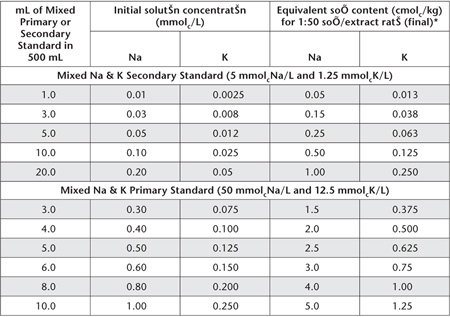

Ammonium acetate (1 M NH4OAc at pH 7) is in wide use internationally for extraction of exchangeable bases (Ca2+, Mg2+, Na+ and K+) from soils. Some reasons are given by Schollenberger and Simon (1945).
This extractant has had less use in Australia for two principal reasons. Firstly, 1 M NH4OAc can dissolve solid phase Ca2+, resulting in erroneously high values for exchangeable Ca2+. Secondly, it is difficult to confirm the complete removal of excess NH4OAc prior to re-leaching soil for the measurement of CEC.
The method plays an important role in Soil Taxonomy (Soil Survey Staff 1975). It should provide similar estimates for exchangeable bases and CEC to method 15B2 on non-calcareous, non-gypsiferous, near neutral soils known to be dominated by clay minerals with permanent surface charges.
Following removal of most soluble salts, exchangeable bases are leached from the soil with 1 M NH4OAc at pH 7.0 at a soil/extractant ratio of 1:46, subsequently diluted to 1:50. After removal of excess NH4OAc, the soil plus acid-washed sand mixture is releached with 1 M NaCl, again to a final soil/extractant ratio of 1:50. This second leachate is retained for direct measurement of CEC.
The method is similar to that described by Blakemore et al. (1987), except different reagents are used to remove soluble salts. If ±0.6–0.7% gypsum is known to be present, direct measurement of gypsum and other soluble salts is recommended, followed by appropriate adjustments to exchangeable bases and CEC.
Extracting Solution – 1 M Ammonium Acetate (1 M NH4OAc) at pH 7.0
Add 575 mL glacial acetic acid (CH3COOH; 17 M) to about 7.5 L deionised water, mix and add 750 mL ammonium hydroxide (NH4OH; s.g. 0.91). Cool, and make to 10 L. Adjust to pH 7.0 with 2 M NH4OH or 2 M CH3COOH. The electrodes of the pH meter must be washed thoroughly before placing them in the Extracting Solution, otherwise K+ salts from the calomel electrode may cause contamination.
Acid-washed Sand
As for Method 15B1.
60% Aqueous Ethanol (w/w)
As for Method 15A2.
20% Aqueous Glycerol
As for Method 15A2.
1 M Sodium Chloride
Dissolve 584.4 g sodium chloride (NaCl) in deionised water and dilute to 10 L.
2 M Ammonium Acetate
Prepare as described for 1 M NH4OAc at pH 7.0 but use 1150 mL glacial CH3COOH and 1500 mL NH4OH to 10.0 L.
Strontium Chloride Solutions (only required if using an AAS analytical finish)
Sr Stock Solution
1 L contains 8.33 g of Sr.
As for Method 15A1.
Sr Working Solution
1 L contains 1.67 g of Sr.
As for Method 15A1.
Diluting Solution for Ca2+ and Mg2+ Analysis
1 L contains 1.50 g of Sr.
Add 180 mL Sr Stock Solution to 100 mL 1 M NH4OAc at pH 7.0 Extracting Solution (identical to that used for soil extractions) and dilute to 1 L with deionised water.
Lithium Chloride for Automated Na+ and K+
As for Method 15A1.
Wetting Agent – Brij 35
As for Method 5A2.
Macerated Filter Paper
Macerate Whatman No. 31 or 41 acid-washed and rinsed filter papers in a food blender or equivalent. Keep moist in a closed jar.
Mixed Primary and Secondary Standards for Ca2+, Mg2+, Na+ and K+
As for Method 15A1.
Working Standards for Exchangeable Bases
To each 500 mL volumetric flask add 250 mL 2 M NH4OAc solution then dispense Mixed Primary or Secondary Standard Solutions as indicated in Tables 15.7 and 15.8. Dilute all solutions to 500 mL with deionised water and store in borosilicate or plastic bottles.
Leaching to remove soluble salts and exchangeable bases is carried out in leaching tubes (see Figure 15.4). If control over flow-rate is necessary, a flexible plastic tube and a Hoffman clip can be attached to the outlet.
Figure 15.4. Leaching column used in the method for exchangeable bases and CEC involving neutral 1 M NH4OAc (Method 15D1).
Table 15.7. Examples of dilutions and concentrations for Ca2+ and Mg2+ Working Standards – 1 M NH4OAc at pH 7.0.
|
|
Equivalent soil content (cmolc/kg) of Ca & Mg, respectively, for 1:50 soil/extract ratio (final) following: |
|
mL of Mixed Primary or Secondary Standard in 500 mL |
Initial solution concentration mmolcCa & Mg/L) |
1 + 9 dilution* of samples and standards |
1 + 49 dilution† ††of samples; 1 + 9 dilution of standards |
Mixed Ca & Mg Secondary Standard (10 mmolcCa & Mg/L) |
|||
1.0 |
0.02 |
0.1 |
– |
2.0 |
0.04 |
0.2 |
1.0 |
3.0 |
0.06 |
0.3 |
1.5 |
5.0 |
0.10 |
0.5 |
2.5 |
10.0 |
0.20 |
1.0 |
5.0 |
20.0 |
0.40 |
2.0 |
10.0 |
Mixed Ca & Mg Primary Standard (100 mmolcCa & Mg/L) |
|||
3.0 |
0.60 |
3.0 |
15.0 |
4.0 |
0.80 |
4.0 |
20.0 |
5.0 |
1.00 |
5.0 |
25.0 |
6.0 |
1.20 |
6.0 |
30.0 |
8.0 |
1.60 |
8.0 |
40.0 |
10.0 |
2.00 |
10.0 |
50.0 |
*Dilute 1 part Working Standards and sample leachates with 9 parts Sr Working Solution if analysing by AAS. For ICPAES, substitute the Sr Working Solution with 1 M NH4OAc at pH 7.0 Extracting Solution.
†AAS analysis requires accurate 1:5 dilution of samples already diluted 1+9 with Sr Working Solution. Use Sr Diluting Solution for Ca2+ and Mg2+ Analysis by AAS (1 L contains 1.50 g Sr) as diluent. Working Standards already diluted 1+9 should not be further diluted.
††For ICPAES analysis, substitute the Sr Working Solutions with 1 M NH4OAc at pH 7.0 Extracting Solution
Position leaching tubes in a stand such that 250 mL borosilicate volumetric flasks can be used to collect leachates. Arrange a support to hold inverted reservoirs above the leaching tubes for aqueous organic solvents used to remove soluble salts, for 230 mL of NH4OAc, 200 mL Aqueous Ethanol, and for 230 mL NaCl, respectively. The necks of these reservoirs should be located just inside the top of the leaching column.
Mix 5.00 g of air-dry soil (<2 mm) with 10.0 g acid-washed sand and pack the soil sample into a leaching tube (Figure 15.4) containing a plug of freshly macerated filter paper. Concurrently, carry a blank containing 10 g of sand through with the assays.
Remove most soluble salts by leaching with 50 mL of 60% Aqueous Ethanol, followed by 2 mL of 20% Aqueous Glycerol. Allow to drain and discard leachates. Leach the sample/sand, mix with 230 mL 1 M NH4OAc at pH 7.0 into a 250 mL volumetric flask. Make to 250 mL with leaching solution (1 M NH4OAc at pH 7.0). Leaching should take at least 4 h to avoid low results from incomplete extraction. To avoid channels and air locks during leaching, apply a gentle suction to the outlet of the leaching tube when the 1 M NH4OAc is added. Retain the leachate for determination of exchangeable bases.
Table 15.8. Examples of dilutions and concentrations for Na+ and K+ Working Standards – 1 M NH4OAc at pH 7.0.

*If necessary, dilute extracts of high concentration with 1 M NH4OAc at pH 7.0 Extracting Solution to bring these within the optimum range of the instrument and to maintain the same concentrations of NH4OAc in standards and sample extracts.
To remove the leaching solution retained in the sample and apparatus, thoroughly rinse the top of the leaching column and the sample several times with small amounts of 60% Aqueous Ethanol, allowing this to drain between each washing. Finally, percolate 200 mL 60% Aqueous Ethanol through the column and discard. This final leachate should be free of soluble NH4+.
Place a 250 mL volumetric flask under each leaching column and leach the soil/sand with 230 mL 1 M NaCl. Make volume to 250 mL with 1 M NaCl. Flasks used for this second leaching step should be reserved for this purpose. Retain this leachate for determination of CEC.
Determination of Ca2+, Mg2+, Na+ and K+ by ICPAES
Set up and operate the ICPAES instrument as advised by the manufacturer. Suitable wavelengths are: Ca = 430.25 nm; Mg = 285.21 nm; Na = 588.96 nm; and K = 766.49 nm. Calibrate the instrument using an appropriate range of Mixed Working Standard Solutions, guided by examples in Tables 15.7 and 15.8. The 1:50 soil/leachate ratio can be factored into the calibration on the ICPAES. A calibration blank should also be measured and adjustments made as necessary.
Determination of Ca2+, Mg2+, Na+ and K+ by AAS
Follow manufacturer’s recommendations with respect to instrument parameters; an air-acetylene flame is usual for all elements; preferred spectral lines are Ca = 422.7 nm; Mg = 285.2 nm; Na = 589.0 nm; and K = 766.5 nm. Ca2+ and Mg2+ are measured on diluted extracts, whereas, extracts for Na+ and K+ analysis are only diluted if over range. A calibration blank should also be measured and adjustments made as necessary.
For Ca2+ and Mg2+, dilute each soil extract and each Mixed Ca and Mg Working Standard with Sr Working Solution as indicated in Table 15.7, noting that Sr is included to suppress interferences in measurement due to phosphate and other ions (MacPhee and Ball 1976). Should Ca2+ and Mg2+ concentrations be above the optimum range of the instrument, dilute samples only as indicated in Table 15.7. Mix well, then determine Ca2+ and Mg2+ concentrations directly, adjusting as necessary for the relevant dilution.
For measurement of Na+ and K+ by AAS, use a selection of Mixed Na and K Working Standards (Table 15.8). Determine concentrations of Na+ and K+ in soil extracts directly from the instrument. Settings of the instrument should be checked periodically.
Na+ and K+ (Automated and Manual)
As for Method 15A1 but using relevant standards (Table 15.8) and blank solutions.
CEC
Determine CEC by Method 15I1 or 15I2 or 15I4 (NH4-N only).
Exchangeable Ca2+, Mg2+, Na+ and K+
Report NH4OAc exchangeable Ca2+, Mg2+, Na+ and K+ [cmolc/kg], expressed on an oven-dry soil basis. Use the air-dry moisture to oven-dry moisture ratio to make the oven-dry conversion. Refer to Method 2A1 for guidance with regard to this soil moisture calculation.
CEC
Report CEC (record relevant method code/s; cmolc/kg) expressed on an oven-dry basis. Refer to Method 2A1 for guidance with regard to this soil moisture calculation.